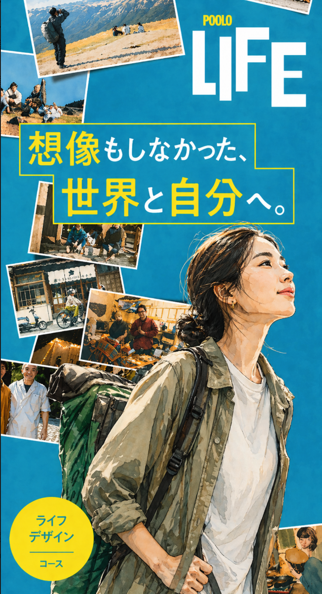

POOLO LIFE 12期の本格募集に向けて、現在地と重点施策、チームに見てほしい論点を整理したメモ。
12期は来月から募集開始。プレエントリーで7人が手を挙げてくれている今、LPと体験会と地域の旅を同時に磨いている最中の現在地を、チームと共有する。フィードバックがほしい論点も最後にまとめている。

旅と、問いと、共創で
想像もしなかった世界と自分に、
出会いにいく
東川イベント、参加確定。
6万円ほどの旅企画でも、人は来てくれる。
本募集前のプレエントリーは現状7人。
今月末まで継続。
6月募集開始。8月コース開始。
JOBは募集しない。
現状7人。今月末まで募集。本募集の初動を、ここから設計する。
12期向けに、ワイヤーフレームv7を磨き込み中。
豊島、丹波山、鞆の浦で、POOLO的な旅の企画を進めていく。
その背骨として「POOLO的な旅の7ルール」を作ってみた。
属性別に3本展開。それぞれ「誰に・何を問うか」を変えてテスト中。
| 講義 | ゲスト | テーマ | 状況 |
|---|---|---|---|
| 講義1 | 髙井典子 | 旅と揺さぶり | OK |
| 講義2 | たかちんさん | 自己理解と探究テーマ | 打診中 |
| 講義3 | 最所あさみ | 旅と言語化 | OK |
| 講義4 | 永井玲衣 | 旅と対話 | 打診中 |
| 講義5 | 徳谷柿次郎 | 実践と人生 | OK |
| 講義6 | 小池、加藤、根岸 | 越境とキャリア | 打診中 |
| 講義7 | 山口絵理子 | 越境とプロダクト | これから |
| 講義8 | 地球の歩き方社長 | 想像もしえない世界の作り方 | OK |
LPと体験会、ゲスト紹介、東川。トーンや写真選びについて、率直な感覚をもらいたい。
LPの一番上で何を語るか。検討者が最初の3秒で読む文字。ここに違和感や提案があれば。
LPワイヤーフレーム v7 のうち、下記の番号エリアを重点的にフィードバックがほしい。
https://michinorionda.github.io/poolo-life/poolo-life-lp-wireframe-sp-v7.html
エンジニアリング（計画的に進める）と、ブリコルール（即興的に進んでいく）。
「わけのわからない他者」や「わけのわからない自分」と、向き合い続けるための知恵としての文化人類学。ネガティブ・ケーパビリティ。安易な答えに飛びつかず、現場の中に身を浸し続けること。
1997年の中教審（中央教育審議会）。
「自分探し」という語の社会的な広がりは、ここを起点に語られることが多い。
人は、自分の知っている言葉でしか検索できない。
だから、知らない場所へ身を置く必要がある。旅とは、自分の検索ワードを更新するための時間。
POOLO LIFEで言えば、関心探究型の仲間50-70人という「弱いつながり」が、自分の検索ワードを書き換えていく場になっている。
POOLO LIFEは「関心探究型」のための場として設計している。社会の主流は「目標逆算型」。マーケや発信の言葉を選ぶときに、どちらの人に向けて書いているのかをチームで意識的に分けたい。
関心探究型を、50-70名 × 8か月で一つの場に集める。一人では辿り着けない景色まで、仲間の引力で運ばれていく。これがPOOLO LIFEの設計思想。